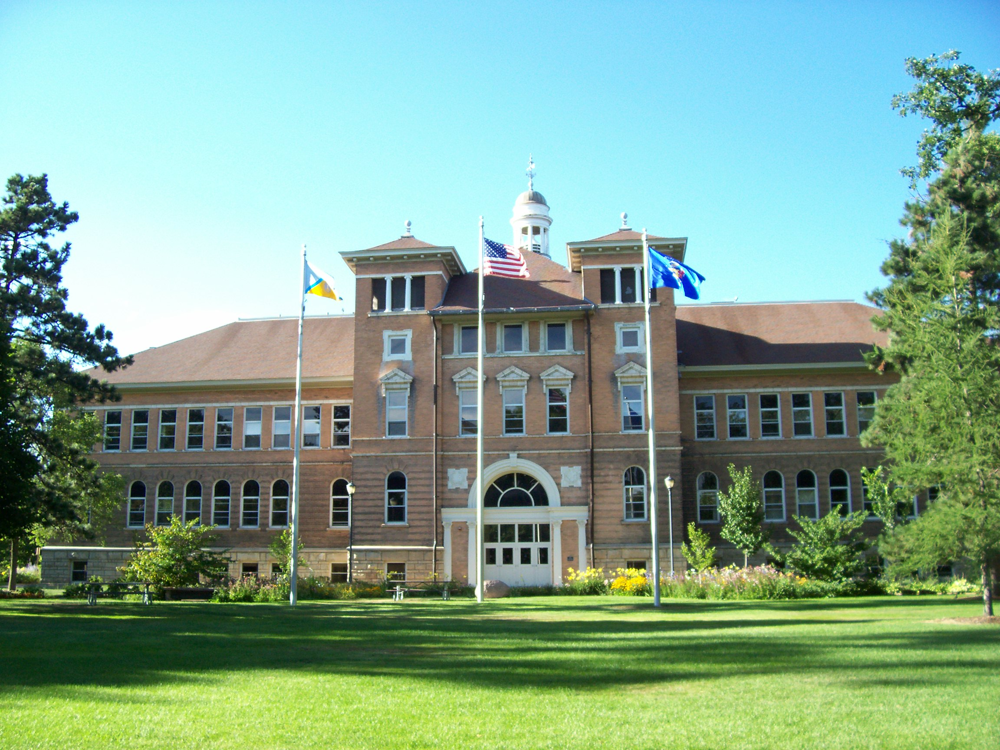

Coordinates
Old Main
Old Main is the cornerstone of life at University of
Wisconsin-Stevens Point. In its early years, it housed all of the
classrooms and administrative offices; it was truly the center of
campus. Now only a portion remains of the building Old Main
used to be, but she still has a spark that will continue to glow as
long as the campus bustles with life and learning.